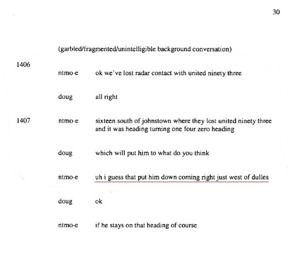
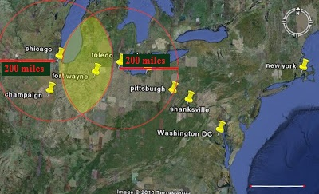
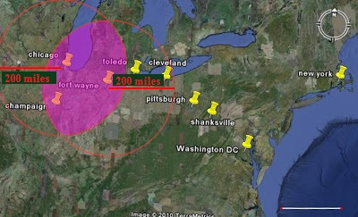
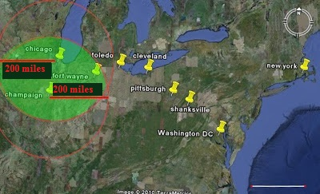
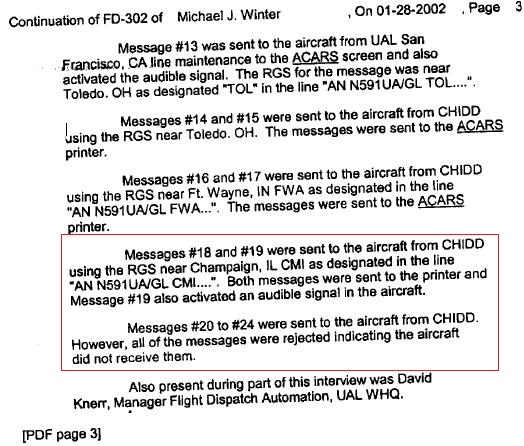

United Airlines 'Flight 93' - "An Independent Analysis"
Wednesday, 27 May 2020Introduction
I would like to give special thanks to Andrew Johnson, Richard D. Hall, Christian Hampton (Wolf Clan Media), Conspiracy Cuber, Julia Ratsey, Morgan Reynolds and Unite Planet's - Jonny Sinclair, Paul Northridge, Bernardo Franklin Fortuna for all the support and encouragement with my research.
In this analysis I explore conflicting data evidence in relation to "United 93”. The evidence, data and information I present in this analysis is available in the public domain, and much of it comes from official sources. My hypothesis has been carefully drawn from the data, which I have gathered over the last 5 years which has led me to reach my conclusion.
The ‘official’ narrative of United Airlines ‘Flight 93’ (UAL 93)
United Airlines ‘Flight 93’ (UAL 93) was a domestic scheduled passenger flight which was allegedly hijacked by four Al-Qaeda terrorists. It allegedly crashed into a field in Somerset County, Pennsylvania, during an attempt by the passengers and crew to regain control. The hijackers stormed the aircraft's cockpit 46 minutes after take-off. The pilot and first officer took measures, by de-activating the autopilot to hinder the hijackers. Ziad Jarrah, who had allegedly trained as a pilot took control of the aircraft and diverted it back toward the east coast, in the direction of Washington, D.C. Khalid Sheikh Mohammed and Ramzi bin al-Shibh, considered principal instigators of the attacks had claimed that the intended target was the Capitol Building. All 44 people on-board were killed, including the four alleged hijackers. No one on the ground was injured. The aircraft involved was a Boeing 757–222, registration number: N591UA was flying United Airlines' daily scheduled morning flight from Newark International Airport in New Jersey to San Francisco International Airport in California.
https://en.wikipedia.org/wiki/United_Airlines_Flight_93
Discrepancies with the official data evidence of UAL 93's take-off time
UAL 93 was delayed for 41 minutes on the runway in Newark, and finally took-off at 8:42 a.m. according to the official narrative. Yet in the Bureau of Transportation Statistics (BTS) database it reveals a discrepancy regarding the "wheels-off time" of 8:28 a.m. (This is the moment when the plane lifts-off from the runway). UAL 93's official wheels-off time is 8:42 a.m. Additionally, according to the Aircraft Communications Addressing and Reporting System (ACARS) data, the wheels-off time is also 8:28 a.m. A similar discrepancy was found in the case of United Airlines ‘Flight 175’, which had the official wheels-off time of 8:14 a.m., but according to ACARS data, the wheels-off time was at 8:23 a.m.
The Aircraft Communications Addressing and Reporting System (ACARS) is a device used to send messages to and from an aircraft. Very similar to text messages and email we use today, Air Traffic Control, the airline itself, and other airplanes can communicate with each other via this "texting" system. ACARS was developed in 1978 and is still used today. Similar to cell phone networks, the ACARS network has remote ground stations installed around the world to route messages from ATC and the airline, to the aircraft depending on its location and vice versa.
To understand further how the information was being generated, the wheels-off time is triggered automatically by a mechanical sensor switcher when the airplane loses contact with the ground during take-off. The data is then sent automatically to the airline via the ACARS, and then the airline forwards the data to the BTS on a regular basis. Ostensibly, no human intervention is involved, thus no human failure is possible. An obvious question to ask is: how can two pieces of "official" data of the take-off time be in conflict with the offical narrative? The answer is they cannot. A question that has to be asked is, does this suggest or indicate the possibility that a duplicate airplane took-off for this discrepancy to happen? Evidence suggesting this possibility exists with the account of Anthony F. Mazza with UAL 93 at Newark Airport on 9/11.
The strange encounter that Anthony F. Mazza had with UAL 93 at Newark Airport on 9/11
On the morning of 9/11, Anthony F. Mazza was working at Newark Airport as a fuelling technician. One of the planes he provided with fuel was United Airlines 'Flight 93'. In the cockpit of the plane he met a person who was apparently neither Leroy Homer, Jr, the co-pilot, nor Jason Dahl, the pilot.
On Oct. 19, 2001, Anthony F. Mazza was interviewed by the FBI. Here's the FBI report:
Anthony F. Mazza, Mazza worked as a fueler for Ogden Aviation Services at Newark International Airport since 1973. Mazza fuelled United Airlines ‘Flight 93’ on September 11, 2001 prior to its departure and crash in western Pennsylvania. Mazza stated that everything seemed normal on the flight including the amount of fuel that was pumped into Flight 93's tank. Mazza stated that prior to the passengers boarding Flight 93, he had completed fuelling the plane and proceeded to the cockpit to inform the co-pilot of the completed task. This has been the standard operating procedure for United flights out of Newark for many years. Mazza entered the cockpit where he handed the fuelling sheet to a young Caucasian male, well groomed, brown hair and a white shirt, who was sitting in the co-pilot's seat. The male responded to Mazza by saying thank you and taking the paper from him. Mazza then departed Flight 93 prior to the passengers boarding. Mazza stated that this was approximately 30 minutes prior to the scheduled departure time. Mazza was interviewed by FAA employee John Patani shortly after the crash in western Pennsylvania. Mazza stated that he reported that there was nothing unusual on the day of the flight and that the plane had been fuelled without incident.
http://911woodybox.blogspot.com/2009/09/who-was-male-in-flight-93s-co-pilot.html
On Friday, October 12, 2001 Mazza saw a memorial for the crew of Flight 93 and saw pictures of the co-pilot of Flight 93. The picture was the actual co-pilot of Flight 93, who was Leroy Homer. Mazza stated that he was certain that the co-pilot he spoke with was not Mr. Homer.
http://www.911myths.com/images/e/ed/Team7_Box12_LeroyHomer.pdf
Who was the "male" in the co-pilot's seat, if it wasn't neither Leroy Homer nor Jason Dahl, the pilot? After seeing the memorial, Mazza obviously took the initiative to contact the FBI. Had he identified Dahl - whose picture he certainly saw, too - as the "male", he would not have felt compelled to call the FBI? When interviewing Mazza, the FBI surely asked him about this possibility and probably showed photos of Dahl again. In any case, the absence of Dahl in the report makes it clear that he was not the "male" either, and Dahl was 43 years old, not really a young man like the "male" as described by Mazza.
Jere Longman describes the United Airlines routine pre-flight procedures.
Before the passengers board a plane, it has to be checked, of course. Basically the captain looks after the cockpit instruments along a pre-flight checklist while the first officer checks the plane outside (tires etc.).
The fact that Mazza met neither Dahl nor Homer is even more compelling than the presence of the "male". Again, is this further evidence indicating that duplicate airplanes were involved on 9/11? As I mentioned earlier, it is now known that according to United Airlines ACARS messages, UAL 93 took-off at 8:28 a.m. in stark contradiction to the "official" take-off time of 8:42 a.m.
Did passengers board a duplicate UAL 93?
In the official narrative the passengers of UAL 93 boarded the airplane from boarding Gate 17 of Terminal A at Newark Liberty International Airport on 9/11, however there appears to be an account of passengers boarding UAL 93 from the tarmac. This eyewitness account comes from the New York Giants football player Triton Clayton White.
"We had played a Monday night game in Denver, and flew back home the next morning," White said. "We landed in Newark, N.J., about 6:45 in the morning. We usually get off the plane on the tarmac and board a bus to get to our cars. I noticed another plane sitting next to ours because the people were walking to the plane across the tarmac instead of through the jet way. Two weeks later, as we’re taking another plane to a game, one of the stewardesses informed us the plane that had been boarding next to us was Flight 93 that crashed in Pennsylvania on 9/11. That was a very eerie feeling."
— Fayetteville Observer (01/31/06)
Is it possible Triton Clayton White seen something he was not supposed to? Is it possible the planners of 9/11 did not take into account the possibility of charter flights off-loading on the same tarmac, where a second group of passengers boarded a duplicate UAL 93? Did Triton Clayton White witness the duplicate UAL 93 being boarded on the Tarmac at Newark Airport, which is another separate boarding onto a different airplane, which could explain the discrepancies in the official data between the BTS and ACARS data take-off times? There is no reference in any official information or data of a second boarding of passengers onto UAL 93.
Aircraft Communications Addressing and Reporting System (ACARS) discrepancies
Earlier on in this analysis I highlighted a discrepancy regarding UAL 93’s official wheels-off time at 8:42 a.m. which is in conflict with the official ACARS data, which indicates UAL 93’s wheels-off time was at 8:28 a.m. not 8:42 a.m. as listed in the BTS data-base. UAL 93 (N591UA), definitely took off from Newark Airport (EWR), and the strongest confirmation of this is in this document here:
[doc: UASSI1-00000398] https://www.scribd.com/document/16345059/T7-B18-UAL-Jumpseat-Fdr-Entire-Contents-UA-175-and-UA-93-Emails-and-Documents-562
During my analysis, which is based on the official FBI documents issued on 11/09/2001, it raised the question, was United Airlines (UAL) and the FAA tracing two different UAL 93 flights, because of further ACARS messages sent to UAL 93 after UAL 93 allegedly crashed at 10:03 a.m. UAL are in direct physical contact with its own airplanes, and in the UAL ACARS logs it shows that till 10:10 a.m. ACARS messages UAL dispatchers sent to UAL 93 (N591UA), were physically received by the airplane, and also show that the Radio Ground Stations (RGS) who were also in contact with UAL 93 (N591UA) were Toledo, Fort Wayne and Champaign, IL.
The official data indicates that UAL and FAA were tracking two different airplanes, flying at different times and in different locations, and both were officially identified as UAL 93? Central to my analysis is the evidence that there was a UAL 93 still receiving ACARS transmissions as late as 10:10 a.m. seven minutes after UAL 93 had “allegedly” crashed in Shanksville, PA according to the official narrative crash time at 10:03 a.m. the messages activated the printer in the aircraft and, in one case, even an audible signal. According to messages #18 and #19, they were sent to the aircraft from CHIDD using the Radio Ground Stations near Champaign, IL (CMI) as designated in the line "AN N591UA/GL CMI". Both messages were sent to the printer and Message #19 also activated an audible signal in the aircraft.
These were apparently the last messages received by UAL 93. Here's what happened to the later messages:
Messages #20 to #24 were sent to the aircraft from CHIDD. However, all of the messages were rejected indicating the aircraft did not receive them. These references also identify that an ACARS message had been received by its sender, either ground communications or the airplane. In the final moments, at 10:12 a.m. EST, of UAL 93's flight, ACARS messages were being sent from ground communications but were not being received. This was causing the ACARS messages to be rejected. Knerr advised that UAL 93's low altitude may have caused this dilemma or the fact that UAL 93 had already crashed at the time messages were sent. The last message to UAL 93 which has two time stamps is #707, sent at 10:10 a.m. and affirmed at 10:11 a.m. [FD-302 of Michael J. Winter 28-01-2002, Pg 3, PDF].
Knerr has carefully chosen 10:12 a.m. as the point when UAL 93 ceased to receive messages. Not 10:10 a.m. or 10:11 a.m. but 10:12 a.m. So all messages before - like message #707 - have been received by UAL 93. Did Knerr make a mistake? Knerr was also sitting there with two FBI agents and the print-out of the ACARS messages, having the 10:10 a.m. and the 10:11 a.m. were clearly before their eyes. And what he says is in perfect accordance to Winter's statement: #707 in the ACARS file corresponds to message #19 as described by Winter. All following messages (#20 to 24) were not received by the aircraft and therefore rejected. Below is what a rejected ACARS message looks like:
CHIAO CHI68R
CHIAOUA 111420/ROB
CMD
AN N591UA/GL DEC
- QUCHIAOUA 2
DDLXCXA
***UA93 EWRSFO***
There’s no content, on the second time stamp and no affirmation. Knerr's statement, Winter's statement and the ACARS file are consistent. Are there any doubts that N591UA received and acknowledged a message at 10:11 a.m. eight minutes after the alleged crash at 10:03 a.m. in Shanksville, PA? This evidence proves beyond any doubt UAL 93 was still airborne after and did not crash at 10:03 a.m.
UAL 93's transponder still on after the alleged crash
A transponder is a device that sends a plane’s identifying information, speed, and altitude to controllers’ radar screens. UAL 93’s transponder, which was switched off after UAL 93 was hijacked, is turned back on just before the plane crashes, thereby revealing the plane’s altitude to air traffic controllers at the FAA’s Cleveland Center.
Flight 93’s transponder was switched-off at around 9:40 a.m. although Cleveland Center controllers was able to follow UAL 93 on “primary radar,” which shows less information about a flight.
UAL 93’s transponder is reactivated at 10:02 a.m. and 50 seconds, and then stays on for “approximately 20 seconds, according to information from the flight data to the FBI later today by Rick Kettell, the manager of the Cleveland Center”. After the transponder is turned back on, Flight 93’s radar track is observed by Cleveland Center controllers Linda Justice and Stacey Taylor. The information from the transponder shows them that UAL 93 is at an altitude of 8,200 ft.
The 9/11 Commission gives an exact time of 11 seconds after 10:03 a.m. that UAL 93 crashed. It will claim this "time is supported by evidence from the staff’s radar analysis, the flight data recorder, NTSB (National Transportation Safety Board) analysis, and infrared satellite data". It does note that "the precise crash time has been the subject of some dispute."
A dispute relating to seismic recordings shows a disturbance at 10:06 a.m. and not 10:03 a.m. which the 9/11 Commission claimed the airplane crashed. Again, the official seismic evidence reveals a discrepancy in the official timeline narrative. The seismic data was another piece of evidence which was inconvenient for the 9/11 Commission because of UAL 93's transponder still being recognised by Air Traffic Control (ATC) as airborne after the alleged crash time of 10:03 a.m. This has been explained due to 'Coast Mode' tracking, however, ATC did not recognise any signs of CST (Coast Mode). Furthermore, confirmation that this was not any type of "Coast Mode" is that ATC also recognised UAL 93 reporting an altitude. The only way ATC could observe a reported altitude is if UAL 93 was squawking Mode C on the transponder, which means altitude reporting capability. It would have been impossible for ATC to have observed UAL 93's transponder and altitude after the reported impact time and southeast of the crash site if UAL 93 did in fact crash in Shanksville, PA as the 9/11 Commission concluded.
Here's the account of Mark Barnick, who was a supervisor at Cleveland Center. He refers to 9:41 a.m. after UAL 93 had completed its U-Turn over Cleveland and switched off the transponder for the first time:
UAL 93's transponder was then lost or shut off and the radar tag went into coast. Other aircraft in the area verified that they had visual contact with UAL 93 and that it was still flying southeast bound. In order to follow the aircraft, John Werth started a new flight following tag on UAL93's primary radar target. No altitude information was available and all other controllers were advised to keep all aircraft well away from the target of UAL 93. However, according to National Transportation Safety Board (NTSB) Flight Path Study, UAL 93 allegedly impacted the ground at 10:03 a.m. The following transcript excerpts are provided by the Federal Aviation Administration (FAA). It is a conversation between Air Traffic Control System Command Center - East, Management Officers (ntmo-e) and other various facilities. The conversation is as follows in real time:
14:05 (10:05 a.m.)
ntmo-e: ok united ninety three we're now receiving a transponder on and he is at eighty two hundred feet
doug: now transponder and he's eighty two-hundred
ntmo-e: southeast bound still
doug: eighty two hundred feet and now getting a transponder on him
ntmo-e: correct
doug: ok buddy
14:06 (10:06 a.m.)
ntmo-e: ok we've lost radar contact with united ninety three
Source of the transcript: https://www.scribd.com/document/14141827/NYC-B1-NTMO-East-Position-3-Fdr-Transcript
UAL 93 switched on the transponder at 10:05 a.m. two minutes after the "official" crash time, and the transponder indicated an altitude of 8200 ft. It was also heading southeast. One minute later, at 10:06 a.m. radar contact with UAL 93 was lost, at the position 39 51 North, 78 46 West. This point is 15 miles southeast of the "official" crash site in Shanksville, PA.
This proves UAL 93 was still airborne after the crash because of the latitude and longitude positions reported by ATC (3951N - 7846W) where they reported UAL 93’s last known radar position. It is unclear if the position is reported as Degrees, Minutes or Decimal, however, standard aviation terminology is in Degrees, Minutes. With that said, both positions are well past the official UAL 93 crash site. So at 10:05 a.m. 2 minutes after the official crash time (10:03 a.m.) the NTSB report says UAL 93 had crashed in Shanksville, yet they had UAL 93 on radar which is absolute proof UAL 93's transponder was still operational because ATC were still receiving altitude information at 10:05 a.m.
Air Traffic Control's last known coordinate of UAL 93
At 14:10 UTC (10:10 EST) in the official ATC recordings, we hear two controllers discussing the last known coordinates for UAL 93, where the controller gave UAL 93’s last known positioning location as 3951 (North) 07846 (West). Taken from the “official” ATC transcript. See below:
14:10 (10:10 a.m.)
ntmo-e: I don't know if he's landed ok; the last position of united I'm going to give some coordinates united ninety three
doug: yes
ntmo-e: three nine five one north zero seven eight four six west
doug: zero seven eight four six
ntmo-e: west
doug: west
doug: all right
ntmo-e: you got the thirty nine fifty one north
doug: ya thirty nine fifty one north zero seven eighty four six west
ntmo-e: that's the last known position of united ninety three
Full transcription can viewed here: https://www.scribd.com/document/14141827/NYC-B1-NTMO-East-Position-3-Fdr-Transcript
Astonishingly, the last known coordinates (3951N 07846W) given by the ATC locates UAL 93, 15 miles past the crash site proving that UAL 93 was still airborne after the alleged crash at 10:03 a.m. It was also reported at 14:00 UTC (10:00 EST) which was captured in the Air Traffic Control (ATC) recordings and transcripts that UAL 93 was spotted by a VFR which reported that UAL 93 was travelling at 8,000 feet and 11 miles south of Indian Head, PA, which is just north of Cumberland, Maryland. Based on the ATC evidence, UAL 93 is now in two different locations?

Evidence UAL 93 was in two different locations after the alleged crash?
Strangely, the ACARS messages which indicate UAL 93 was near Champaign, IL after the alleged crash in Shanksville is no where near to UAL 93’s last known coordinate, which was 15 miles past the official crash site. Based on this official evidence and data conflict, FAA and United Airlines had to be tracking two different airplanes which were in two completely different locations.
No Emergency Locator Transmitters (ELT) when UAL 93 allegedly crashed in Shanksville
The Emergency Locator Transmitters (ELTs) are emergency transmitters that are carried aboard most general aviation aircraft in the U.S. In the event of an aircraft accident, these devices are designed to transmit a distress signal on 121.5 and 243.0 MHz frequencies. ELTs are mounted aft in the airplane, and designed to be triggered upon impact or may be manually activated using the remote switch and control panel indicator in the cockpit. Activation of the ELT triggers an audio alert, and 406-MHz ELTs transmit GPS position for search and rescue.
There was no apparent ELT signal picked up in the area where UAL 93 allegedly crashed. Major Allan Knox, who works at the Air Force Rescue Coordination Center, which is the contact for credible ELT signals, will tell the 9/11 Commission that he: “does not recall an ELT detection being brought to his attention”. This indicates that UAL 93 did not crash in Shanksville, PA, thus supporting the Air Traffic Control data evidence that UAL 93 continued on heading towards Washington.
UAL 93's new flight plan to Reagan National Airport, Washington
UAL 93 deviated off course, after completing its U-Turn over Cleveland, Ohio and switched-off the transponder for the first time at approximately 9:40 a.m. UAL 93 filed two additional new flight plans. The first one was Hagerstown (HGR) and a second one at 9:55 a.m. was to Regan National Airport (DCA).
Additionally, in support of this evidence, Linda Justice can be heard during ATC communication recordings saying “UAL 93 is flashing over Hagerstown”.

Hagerstown locates UAL 93 approximately 69 miles past the official crash site. Another piece of official evidence is in the ATC communication transcripts locating UAL 93’s position west of Dulles International Airport, Washington. See transcript page 30 below:

{kind=link}
A noticeable gap in primary radar happens right when UAL 93 switches from San Francisco International Airport (SFO) to Reagan National Airport (DCA) between 9:52:03 a.m. and 9:53:21 a.m. No other flight had this issue on 9/11. A new arrival time at DCA (Reagan National Airport, Washington with an estimated time of arrival at 10:28 a.m. Who was updating this flight? Who authorised these flight plan changes? The Primary Radar stopped pinging UAL 93, so how could ATC update UAL93 flight plan (which is reflected on Flight Explorer) if every single data point has been eliminated? It was reported in the news media that the hijackers filed the new flight plan.
MSNBC News Dateline: reported that the hijacker’s filed the new flight plan from on-board the airplane, with its new destination Reagan National Airport.
There has been a concerted effort on behalf of the authorities to conceal this fact, by saying “this was not result of communication with the pilot” See below:

Yet there’s a major contradiction in the Staff Report published 26th August 2004, which references its source as the NTSB report, Flight 93 flight data recorder. It states: The pilot hijacker, presumably Jarrah dialled into the flight computer the navigational code for Regan National Airport in order to fly the aircraft toward Washington DC.
See screen-shot below:

Additional information comes from 'Flight Explorer' which supports that UAL 93 was heading to Reagan National Airport, Washington, for a 10:28 a.m. landing. Firstly, some additional background information about Flight Explore itself below.
Flight Explorer - They correspond to real airliners with real people moving in real time. Now, travellers, pilots, airline dispatchers and others can go to a laptop or desktop computer and tell where an airliner is within seconds through real-time tracking. This service, called Flight Explorer, differs from the tracking that on-line travel services and airlines provide. Those tell you where a flight should be, based on the timetable, or, when they do provide tracking, update their information less frequently. Ask any flier, and they'll tell you that timetables and schedules are, at best, a polite fiction. "It's the reality that counts," says Berry Gamblin of Dimensions International, an Alexandria, Va., firm that designed Flight Explorer (http://www.flightexplorer.com) and licenses the software to companies. The company uses Federal Aviation Administration air traffic control reports that are updated as frequently as every 10 seconds. Other services available on the Internet update about every 3 minutes. FAA flight data is collected from the nation's 20 major regional air route traffic centers.
[USA Today By David Field 06/08/99] Source: http://www.webcitation.org/6Vpc9jhqr
The Flight Explorer flight-paths were used by 11 news agencies on 9/11, and the FAA themselves regularly used Flight Explorer flightpath recordings until 1999, at which point they began recording them internally. The Flight Explorer flightpaths include all deviations from the planned flightpath, confirming they are position based rather than predictive. The Flight Explorer flightpaths produced by Flight Explorer themselves used their internal data, negating all client refresh timing updates, and so incorporate all FAA supplied positional data. Flight Explorer received regular requests from the FAA themselves for flightpath traces, confirming the accuracy and validity of their data.
UAL 93 was lost and updated at around the same time 9:52 a.m. If the Command Center informed headquarters that controllers had lost track of UAL 93, then it was not the controllers that were updating UAL 93's flight plan to DCA.
More additional evidence shows that UAL 93 did receive a new flight plan on 9/11, reported by both a male flight attendant and also a live news report at 5:00 p.m. by CNN were using Flight Explorer to review the hijackings reported the new flight plan to Reagan National Airport.
Source: https://youtu.be/w9jn-VcQqIc
More news media coverage in the links below, reporting the flight plan change to Reagan National Airport, Washington D.C.
ABC News - https://www.bitchute.com/video/hFMB6fIMMkfQ/
NBC News - https://www.bitchute.com/video/8cpP9MdGA4ER/
There can be no doubt that an airplane identifying itself as UAL 93 was heading towards Reagan National Airport for an estimated time of arrival of 10:28 a.m. Further supporting evidence comes from the Flight Aware screen-shots below regarding UAL 93's landing at Reagan National Airport at 10:28 a.m.
Source: https://youtu.be/6syNnhOSkAI
.jpg)
This file below was provided to Brian Stark via [FOIA 2008-3195] is an Excel sheet recording the DCA departures/arrivals for 9/11/2001:
DCA is Reagan National Airport. See screen-shot below:

So either UAL 93 was edited out of the BTS, or UAL 93 was edited into this XL document. Also, wherever this document came from, that organisation needs to be contacted as to why it says UAL 93 landed at DCA on 9/11.
Interestingly, at 10:22 a.m. WCBC live news coverage reported (Michael Hershman – President of international security and counter-terrorism) an unidentified airplane approaching an airport in Northern Virginia, either Dulles Airport or Reagan National Airport. This is around the precise time UAL 93 would have been coming in to land at Reagan National Airport from its 10:28 a.m. arrival.
Source (Play video from 1 min 47 secs): https://youtu.be/wquAi4gTXfs (Credit to 'Conspiracy Cuber' for discovering this piece of video footage).
What happened to the duplicate United Airlines 93?
The official data evidence it indicates UAL 93 landed at Reagan National Airport at 10:28 a.m. However the official ACARS data evidence shows UAL 93 sill airborne after the crash and near Champaign IL. To establish what possibly happened to this duplicate UAL 93 airplane we must revisit the UAL 93 – Cleveland Hopkins Airport mystery landing story.
On the morning of 9/11 a Cincinnati television station ran a story saying 'Flight 93' landed at Cleveland International Airport instead of crashing in Pennsylvania as claimed in the official government narrative. Reporters at WCPO Channel 9 quoted then Cleveland Mayor Michael R. White as saying "a Boeing 767 out of Boston made an emergency landing due to a bomb threat, the airplane landing safely, moved to a secure location and evacuated”.
The early morning report went on to say United Airlines verified the plane as Flight 93, but was also deeply concerned about another jetliner in the vicinity, Flight 175, flying from Boston to Los Angeles. Also included in the news report was a comment from United CEO, James Goodwin, who said, "The thoughts of everyone at United are with the passengers and crew of these flights. Our prayers are also with everyone on the ground who may have been involved. United Airlines is working with all the relevant authorities, including the FBI, to obtain further information on these flights."

Former Mayor White, as well as United and WCPO comments were suspiciously removed from the television's website in June 2004 in and around the time of the 9/11 Commission Hearings. With the evidence of these statements in the public domain, the obvious question still remains: If Flight 175 had crashed into the South Tower and Flight 93 was downed over Pennsylvania like the government asserted, why was Mayor White saying both planes were in or in the vicinity of Cleveland?
In the 2nd Edition of the 'Loose Change' and 'In Plane Site' documentary films, they both promoted the idea that UAL 93 landed at Cleveland Hopkins Airport at 10:45 a.m. I had been sceptical about this disclosure and promotion of this story for several years, because of the overwhelming official evidence and data I had obtained indicating that UAL 93 landed at Reagan Nation Airport at 10:28 a.m. which was in the opposite direction and location to Cleveland Hopkins Airport. However after studying all the official evidence data, and in particular the official ACARS data, both in relation to UAL 93's take off time discrepancies with the BTS and also later ACARS messages which located UAL 93 near Champaign, IL which is in direct conflict with Air Traffic Control's last known coordinates of UAL 93 (15 miles past the official crash site in Shanksville, PA) as shown earlier in this analysis. I now feel the UAL 93 landing at Cleveland Hopkins at 10:45 a.m. to be relevant and a possibility to provide a plausible hypothesis for the conflicting official evidence data to offer an explaination to what happened to the duplicate UAL 93 airplane flying near Champaign, IL.
The plausible reason why UAL 93 was located near Champaign, IL was because UAL 93 flew near Champaign, IL before turning back around and heading back towards Cleveland Hopkins Airport to make its landing at 10:45 a.m. If this is so then this would explain the statement made by Mayor White and United Airlines, thus why the story was published by WCPO on their website.
The ACARS messages #16 to #19, together with the time when they were received establishes a rough flight path for the duplicate UAL 93:
9:22 a.m. PIT (Pittsburgh)
9:32 a.m. CAK (Canton/Akron)
9:35 a.m. CLE (Cleveland)
9:46 a.m. TOL (Toledo)
9:51 a.m. FWY (Fort Wayne, IN)
10:10 a.m. CMI (Champaign, IL)If we study the ACARS messages sent to UAL 93 which were received by the airplane from the Radio Ground Station (RGS) in Cleveland message #10 at 9:35 a.m. and the last two ACARS messages #18 and #19 sent from RGS in near Champaign, IL which were received at 10:10 a.m. this shows a 35 minute time-line between the two ACARS messages in which UAL 93 would have travelled from Cleveland to near Champaign, IL. If we use the last known received Champaign, IL ACARS message #19, (time of 10:10 a.m.) it equates to 35 minutes for UAL 93 to have flown back to Cleveland Airport to make its 10:45 a.m. landing precisely.


To support this hypothesis is the testimony of Air Traffic Controller Stacy Taylor who recalled UAL 93 changing altitude from 35,000 ft to 41,000 ft, and flying past Cleveland Center and then turning back around and heading straight for Cleveland Center with a rapid descent.
Source: https://youtu.be/RE08PCTf_nY
UAL 93 circling over Chicago?
In the memorandums from the 9/11 Commission online release, on page 5 of this document: http://media.nara.gov/9-11/MFR/t-0148-911MFR-00762.pdf it states: "Marr told Commission staff that his focus was on UAL 93, which was circling over Chicago. Marr thought UAL 93 was waiting for word over what had been happening across the country to begin its attack." Note: Marr is not "connected" to ACARS, but speaks from radar data someone told him.
ACARS messages get transmitted via VHF radio antennae on the ground near the plane. For planes at cruising altitude, "near" can be up to 200 miles away. The sender must include the ground station in the message. After studying the ACARS Radio Ground Stations (RGS) it becomes apparent some ACARS messages were run-by RGS’s near Chicago, such as: Toledo, Fort Wayne and Champaign, IL.
Toledo covers a 200 mile radius coverage which includes Fort Wayne
{kind=link}
Chicago covers a 200 mile radius coverage which includes Toledo, Fort Wayne and Champaign, IL.
{kind=link}
Champaign, IL covers 200 mile radius coverage which also includes Fort Wayne and Chicago
{kind=link}
The VHF ACARS radio range fits perfectly with Marr’s account. The “circling over” Chicago means that the airplane was near Chicago. But the data that Marr mentions is not data from the ACARS, moreover information (incorrect or correct) that comes from other sources: FAA or Radars and therefore does not and could not refer to the RGS that manage the ACARS messages of the Airlines. Chicago must undoubtedly have its own RGS, but as we learned from the words of Knerr and Winter (in the UAR UA 93 ACARS Case Study).
Mr. Winter explains the Aircraft Communication and Reporting System (ACARS) uses radio ground stations (RGS) at various locations throughout the United States for communication. The messages from the aircraft utilize the RGS in a downlink operating system. A central router determines the strongest signal received from the aircraft and routes the signal/message to UAL flight dispatch.
Some research “debunkers” believe that the ACARS ground station is usually determined from flight plans, not from live information about the plane's actual location, but as Mr. Winter explains, this theory is incorrect. Furthermore, UAL 93’s acknowledgement that it received the ACARS messages (18 and 19) sent from the RGS in Champaign, IL is absolute proof that UAL 93 was near Champaign, IL.
{kind=link}
CNBC News Reported UAL 93 Originated in Chicago and headed to Cleveland
CNBC reported information from WPIX at 11:10 a.m. that “the plane that crashed in Pennsylvania originated in Chicago, it was heading to Cleveland and there was 90 people onboard.
Does the CNBC news report corroborate further support for Marr’s account regarding UAL 93 “circling over” Chicago. Does this provide proof that UAL 93 was indeed heading back to Cleveland to make the 10:45 a.m. landing? Although this report states UAL 93 originated in Chicago, and was heading to Cleveland, the evidence is clear that both UAL 93’s took off from Newark International Airport, not Chicago. Was this a mistake in the reporting because UAL 93 was near to Chicago as suggested by Marr? Was this misinterpreted that UAL 93 originated in Chicago because UAL 93 was flying to Cleveland? The report suggests that it was indeed UAL 93. Is this a coincidence that the report correlates with the ACARS messages data regarding the Radio Ground Stations which located contact with UAL 93 near to Chicago?
The UAL 93 confusion with Delta 1989 Theory
Many people say UAL 93 was confused with Delta 1989. The Associated Press and two Ohio newspapers report a landing at 10:45 a.m. However, Delta Airlines registered its landing time at 10:10 a.m. Cleveland firefighters also can confirm that the landing took place before 10:30 a.m. Because Delta Airlines did not lose track of its airplane. The 10:10 a.m. plane was surely Delta 1989. So the 10:45 a.m. plane is by definition – United Airlines 93. To further support this evidence, a report by USA Today said: "Flight Quarantined" - On a remote taxiway at Hopkins International Airport in Cleveland – Delta Flight 1989 is quarantined. Since early reports that a bomb, then hijackers, might be aboard, Delta CEO Leo Mullin, 58, had nervously tracked the flight from the company’s headquarters in Atlanta. Every five minutes, a new report came in. None seemed clear. Still, the flight landed uneventfully in Cleveland at 10:10 a.m. [USA Today, 8/12/02].
Summary & Conclusion:
As I have outlined using the official narrative evidence and data, there are major discrepancies regarding UAL 93's official wheels-off time at 8:42 a.m. which is in direct conflict with the official ACARS data and BTS data, which indicates UAL 93’s wheels-off time was at 8:28 a.m. not 8:42 a.m. We also have official ACARS data suggesting that UAL 93 was near Champaign, IL after UAL 93 had allegedly crashed at 10:03 a.m. and also Air Traffic Control (ATC) communications revealing that UAL 93’s last known coordinate was 3951N 07846W, locating UAL 93 fifteen miles past the official crash site after the alleged crash, which was obtained via transponder data which was active at 10:05 a.m. two minutes after the official crash time at 10:03 a.m. Champaign, IL is not near UAL 93’s last known coordinate 15 miles past the official crash site.
Based on this official evidence and data conflict, FAA and United Airlines had to be tracking two different airplanes. This is supported by Anthony F. Mazza’s account, the fueler for Ogden Aviation Services at Newark International Airport who encountered a different pilot on UAL 93, who was not Leroy Homer, Jr or Jason Dahl, who were officially named as the two pilots of UAL 93. Moreover, the official narrative states the passengers of UAL 93 boarded the airplane from boarding Gate 17 of Terminal A at Newark Liberty International Airport on 9/11, however passengers were observed boarding UAL 93 from the tarmac, which could suggest those passengers were boarding a different UAL 93 airplane, especially taking into account Anthony F. Mazza's account seeing a different pilot of UAL 93.
Additionally, the evidence also indicates UAL 93 filed two additional “new” flight plans. The first one was Hagerstown (HGR) and the second one was Reagan National Airport (DCA). Corroborating evidence demonstrates that UAL 93 was heading towards Washington, DC to make a landing at Reagan National Airport. The official ACARS and ATC data shows UAL 93 still airborne after the “alleged” crash. It has been suggested that the airplanes were inserted blips, however due to the ACARS messages being received by the airplane near Champaign, IL this proves it was not an inserted radar blip. Moreover, neither was the airplane located via ATC coordinates an inserted radar blip because a VFR had a visual on UAL 93 which was travelling at 8,000 feet and 11 miles south of Indian Head, PA, which is just north of Cumberland, Maryland, thus demonstrating a physical airplane was observed by the VFR., thus proving two different UAL 93's.
The evidence presented here in this analysis demonstrates that an airplane identifying itself as UAL 93 most likely landed at Reagan National Airport at 10:28 a.m. while a duplicate airplane was ostensibly identifying itself as UAL 93 near Champaign, IL which appears to have landed at Cleveland Hopkins Airport at 10:45 a.m. which was reported as so on the morning of 9/11 by Cleveland Mayor Michael R. White. It was also reported via a Cincinnati television station, saying “Flight 93 had landed at Cleveland International Airport”.
In conclusion, the “official” telemetry data itself strongly indicates that a duplicate UAL 93 airplane was involved on 9/11.
On a final note…
The hypothesis that I propose in this analysis was formed based on the official evidence (telemetry) data, witnesses statements and various news media sources, which has led me to reach my conclusions. I will always keep an open mind and allowance of new evidence which will warrant further enquiry, which may form a new updated hypothesis in the future.